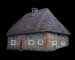

Les parcelles de terrain qui vous appartiennent sont vos biens les plus précieux. C'est à vous de gérer le plus efficacement possible l'expansion et la construction de votre seigneurie. Voici les principaux bâtiments qui peuvent composer vos terres.

Les maisons sont les seules habitations pouvant héberger vos paysans (sauf les campements).
- Une maison héberge 18 paysans. Tous les autres bâtiments à l'exception du château et des campements utilisent 10 paysans.
-Un maximum de 60% de vos acres totales est permis en maisons.
Unique source de nourriture.
- Une ferme produit 40 rations par jour.
C'est à cet endroit que le bois est préparé à des fins de construction.
- Une scierie produit 35 unités de bois par jour.
Les mines sont une excellente source d'or.
- Une mine produit 125 pièces d'or par jour.
Lieu où votre mage expérimente de nouveaux sorts.
- Ils augmentent les points d'expérience de votre mage. Ils ont 70% de chance de produire 1 point d'expérience par jour (hainyen) par temple.
Tour d'observation, elles sont idéales pour voir ce qui sepasse dans vos terres.
-Elles augmentent la probabilité de faire échouer la mission des voleurs ennemis.
- Augmente les probabilités de réussite durant les explorations. Chaque % de tours donne 2% de chance.
- Diminue les frais d'exploration. Chaque % de tours donne 2% de moins de frais.
- Chaque % diminue de 1% les pertes en acres lors d'attaque.
- Diminue les dommages faits par les armes de siège. Chaque % donne 4% de réduction de dommages (max 75%).
- Chaque % réduit de 3% les pertes d'unités militaires lors des combats.
-Limité à 20% de vos acres.
Lieu où les armes sont fabriquées.
- Réduction des coûts d'entraînement des unités militaires. Chaque % réduit le coût de l'entraînement de 2%.
-Réduction des frais militaires. Chaque % réduit de 5% les dépenses militaires.
-Limité à 25% de vos acres.
Murs entourant vos terres.
- Ils augmentent la défense de votre seigneurie. Chaque % donne 3% de protection supplémentaire.
- Limité à 40% de vos acres.
Murs entourant vos terres.
- Ils augmentent la défense de votre seigneurie contre la magie et le vol. Chaque % donne 3% de protection supplémentaire.
- Chaque % augmente le temps de retour des troupes ennemies de 1.5%.
Permet l'élevage des chevaux
-Une écurie abrite 100 chevaux.
Lieu d'hébergement supplémentaire.
-Un campement héberge 10 paysans.
- Les frais d'hébergements font en sorte que chaque % diminue le revenu d'or de 2%, de bois de 1% et de nourriture de 1%.
-Limité à 20% de vos acres.
Permet aux unités militaires d'augmenter leur force de frappe.
-Ils augmentent la force d'attaque de votre seigneurie. Chaque % donne 2% de force offensive supplémentaire.
-Limité à 20% de vos acres.
Bâtiment permettant de recevoir des cadeaux des dieux.
Type de cadeaux divins selon la probabilité d'en recevoir par jour de jeu..
- Chance élevé: Or, bois, nourriture, armes de siege et armure
- Chance faible: Science gratuite au choix (minimum 1 château est requis)
- Chance très faible: Un des trois sorts divins (minimum 1 château est requis)- La probabilité d'obtenir des sciences gratuites et sorts divin s'améliore avec la présence de chaque chateau construit.
- Indestructible face aux sorts de destruction de bâtiment.
-Limité à 20% de vos acres.
Bâtiment de production des armes de sièges et armures
- Produit des armures améliorées (+1 attaque, +1 defense) utilisable uniquement par les élites.
- Chaque % diminue de 2% le prix des bâtiments. (Pas applicable au château)
- Ce bâtiment ne peut être construit sans la présence d'un chateau.
- Nécéssite la présence d'un château afin de produire arme de siège et armure.
Bâtiment de prestige protégeant à plusieurs niveaux.
- 1 seul château est permis à tous les 500 acres.
- Un château procure + 400 paysans, + 500 points de défense et + 1000 or par jour.
Il est à noter que les parcelles de terres inutilisées n'abritent pas de paysans. Tant qu'il n'y aura rien de construit sur ces terres, elles ne produiront rien.
Lorsque vous désirez démolir un bâtiment, il en coûte de l'or afin de réaliser cette opération.